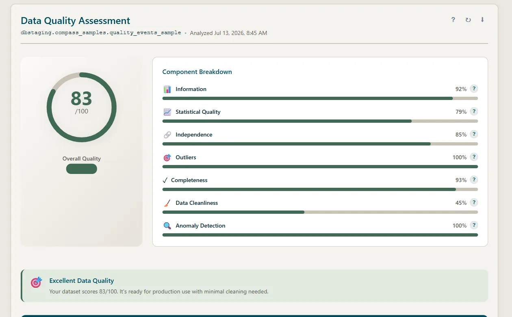
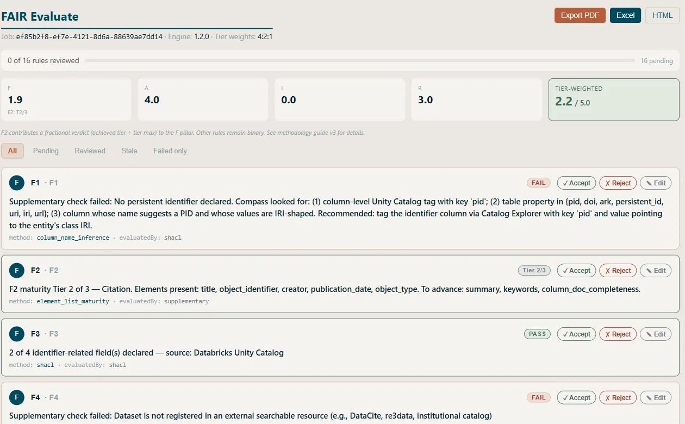
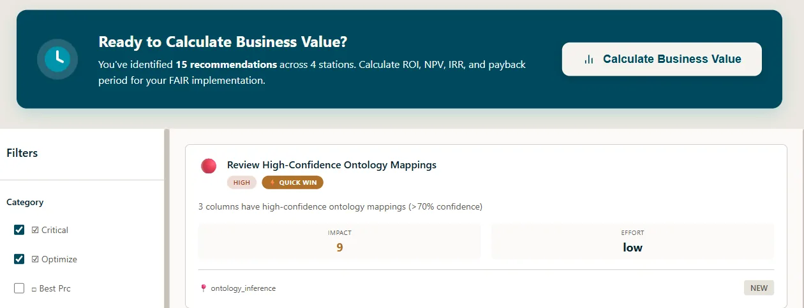
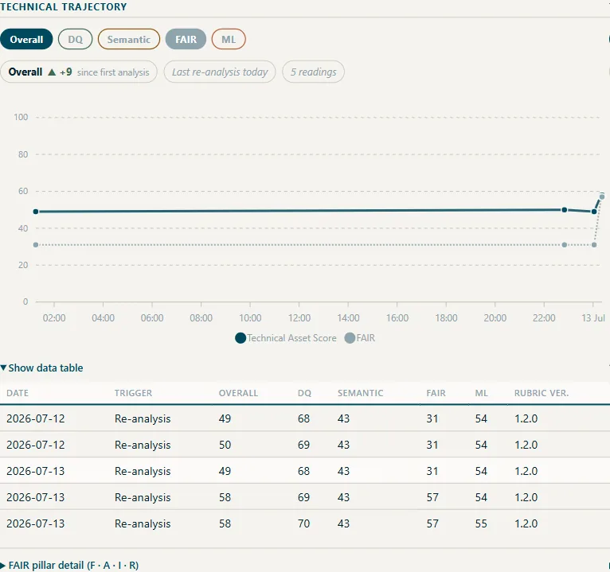

AI readiness,measured—not asserted.
Know whether your data can support a defined AI use case, what is blocking it, what to fix first, and what the fix is worth—without moving connected source data.
Built for regulated industries · Source data stays in your environment · Read-only, in place
Not ready for supervised AI
Technical assessment components- Semantic · 43Critical
- FAIR core · 31Blocked
- Statistical · 69At risk
- ML readinessAt risk
Two source systems never shared a semantic foundation — the fragmentation blocks reliable integration and inflates AI/ML preparation.
Canonical vocabularies, documented fields, machine-readable declarations — then re-assess to prove the lift.
AI-ready datais more than clean data.
Clean data is not ready data. A dataset can pass every hygiene check and still be semantically ambiguous, statistically unsuitable, contextually invalid, or non-compliant for a defined AI use case. DATA Compass measures data readiness for enterprise AI across four dimensions, grounded in FAIR, and turns every finding into an evidence-traced recommendation, executable action plan, and modeled business case.
The readiness scorecard
- A point-in-time score with no evidence behind it
- Silos assessed one platform at a time
- Findings that die in a slide deck
- No line from data spend to AI outcome
DATA Compass
- Verdicts traced to named tests and cited evidence
- Databricks, Snowflake, Veeva, files — assessed in place
- Every finding ships with an executable remediation plan
- Readiness lift measured, business value modeled — over time
Most teams say their data is AI-ready. Few have measured it.
One dataset.Four moments.
Follow one sample dataset through the loop Compass runs: assess it, diagnose the root cause, act, and prove the improvement. Every screen and every number below is the product on that dataset — recorded, not mocked.
Clean data is not ready data.
Data quality scores 83/100—yet technical data readiness for supervised AI is 50, because semantic, FAIR-foundation, and ML-readiness gaps remain. The gap between those two numbers is the argument.

The gaps, named and evidenced.
Every failed check carries its evidence: the interoperability pillar at zero, no machine-readable identifiers or vocabulary bindings — the fragmentation made visible, rule by rule, with review controls on each verdict.

The fix arrives with the finding.
Recommendations arrive ranked, with impact and effort attached — and a business-value calculation offered across the full set, so the first thing you do is the thing that moves readiness most.

Reassessed. The trajectory is the deliverable.
Every re-analysis appends a reading: the score trend per dimension and the delta since your last checkpoint — the readiness lift measured, the business value modeled from your assumptions.

Four dimensions.One foundation.
FAIR makes data legible — findable, accessible, interoperable, reusable. Necessary, and not sufficient: a perfectly FAIR dataset can still be statistically broken, wrong for your use, or non-compliant. Compass treats FAIR as the substrate and measures the four dimensions it enables but cannot guarantee.
Semantic Clarity
Does the data mean what it says — to a machine?
Proof · ontology inference with labelled confidence
- Infer column-to-class alignment before it's tagged
- Score against your private ontologies — CDISC, IDMP, your taxonomy
- Interoperability made first-class: declared, inferred, or absent
Statistical Health
Is the data quantitatively sound?
Proof · every score traces to a named test
- Data quality — eight component algorithms
- ML readiness — sufficiency, bias, separability, features
- Named tests: Benford, Pearson, Cohen's Kappa, Shapley
Contextual Validity
Is the data right for your specific use?
Proof · evidence-cited judgment per rule
- Customer-authoritative Domain Packs, versioned and yours
- Fit scored against a declared use
- Deterministic rules first, synthesis only where it must be
Regulatory Compliance
Does the data meet the integrity bar?
Proof · readiness against regulatory expectations — advisory, not certification
- ALCOA+ — nine data-integrity attributes
- FDA credibility — seven steps plus Step 8
- GDPR · HIPAA · CCPA, cited line-by-line
Three reads on one domain.The disagreement is the finding.
Compass doesn't take the data's word for it. Every FAIR assessment triangulates three independent reads. Where they agree, you have a finding you can defend. Where they diverge, the divergence itself is the insight — and it's named, not hand-waved.
Eight named divergence patterns — each one an actionable diagnosis.
Your data stays.Compass comes to it.
Compass deploys inside your environment and connects to your platforms read-only. Analyses run through your own compute; source data stays in the systems that own it. No ETL, no copies, no new storage — the answer to the first question every regulated enterprise asks during security review.
How much autonomycan your data support?
Connect your datawhere it lives.
Connected sources are assessed read-only and in place. Customer-provided files stay inside your deployment boundary.
Databricks
Unity Catalog browser, SQL profiling, MLflow assessment.
Snowflake
Database and schema browser with SQL API profiling.
Veeva Vault
QMS, CDMS, and RIM module adapters with OAuth2 SSO.
Stardog
SPARQL querying, ICV validation, reasoning-powered analysis.
Know before you deploy.Measure data readiness. Ship AI on evidence.
Start with a technical data-readiness assessment in minutes. No code changes, no movement of connected source data, no black boxes.
We'll walk you through a technical data-readiness assessment on an illustrative dataset — read-only, in place.